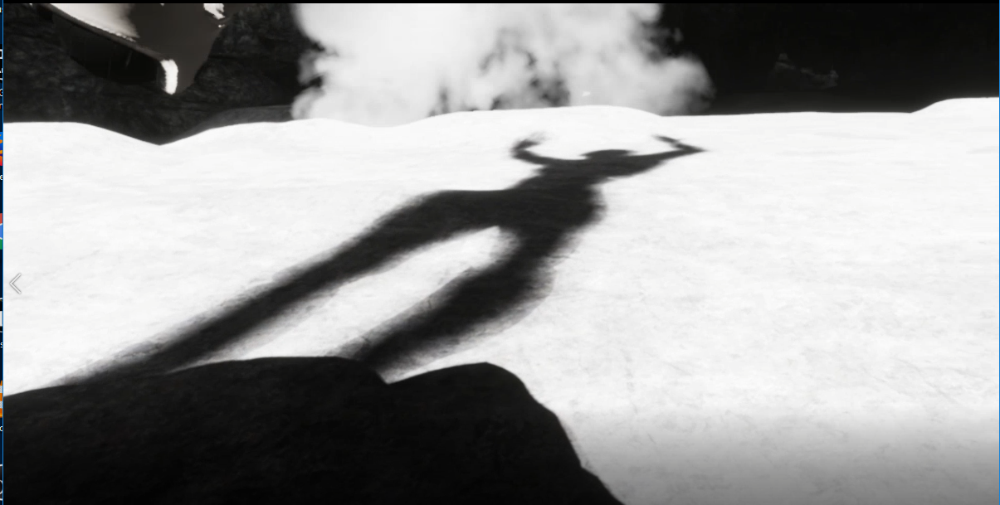
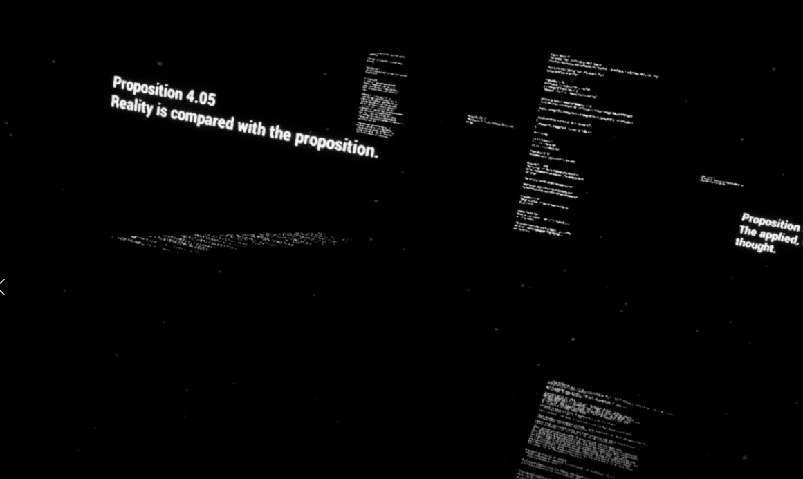

Pharmakon is an immersive and interactive installation that offers a path
through a set of universes representing metaphorically the
human brain areas.
The title is based on an ambiguous Greek notion, meaning both remedy and poison,
as a metaphor for our relationship to technology, which always oscillates
between attraction and repulsion. /br>
The installation is divided into two spaces each with a separate entrance
One of the two spaces is used for the virtual reality space, the other for
on-screen viewing of it.
There should be no communication between the two, the objective being
to thwart the expectations of the person immersed in his environment
and its interaction with it.
The virtual reality environment was realized under Unreal Engine
4.20.3 and is available for the Oculus Rift VR headset and the Kinect camera
V.2.
It is therefore a metaphorical modelling of the human brain, the
basic level allows entry into one of the 4 areas: language/reason,
hearing, balance/proprioception and a meta-level of memory
which is only accessible once you have completed the first 3 areas.
“Pharmakon” questions the relationship to the body, to materiality in this
“virtual” world, it questions the problem of embodiment, of incarnation,
and more generally new perceptual relationships generated by these
new technological devices.
But also the relationship to movement, to gesture as a symbol of the process.
The aim here is to highlight the ambiguity of the virtual toward the
identity issue.
The continuous movement of the real undermines the possibility of a diachronic identity principle : what guarantees the stability of the essences in the unmanageable line of time?
The discretization of the movement tries to recover the diachrony of identity but the ruptures that it presupposes in the
time line tend to create the opposite effect.
There is also a game about the relationship between gesture and cartography that
opens up to a much broader question about its ambiguous relationship with
the openness involved in the movement. This is what leads us to a
“virtual meta-ontology” that truly accepts a primary multiplicity
and is placed in the interstice of the movement to escape all
systematism.
To free oneself, one must remain in the gesture and continue the navigation.
Pics:

